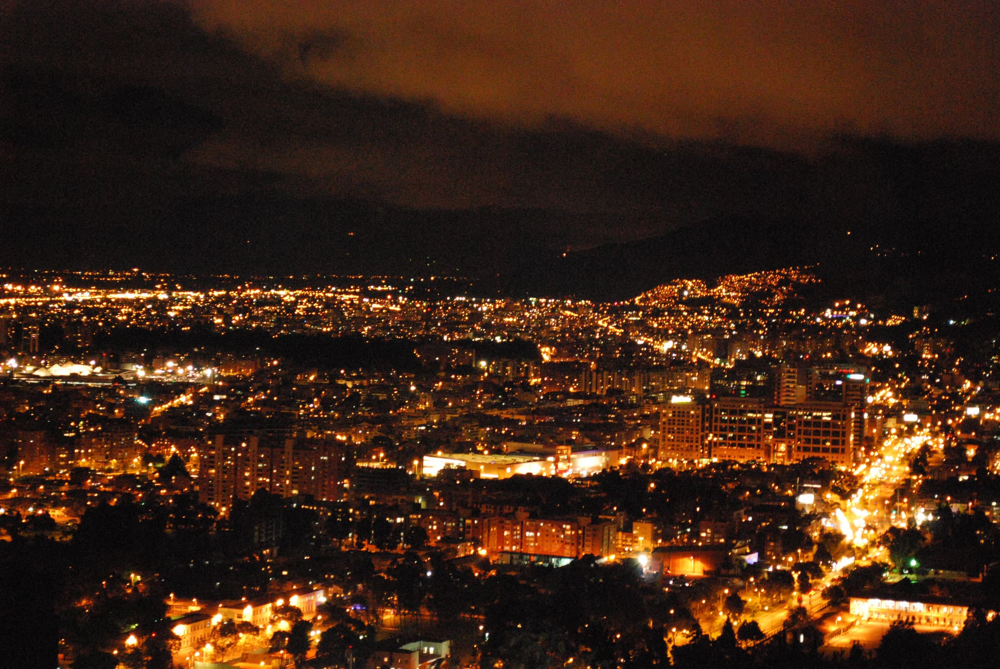

CONOCE BOGOTÁ
Bogotá es una ciudad que tiene más de 450 años de historia. Es la capital de Colombia y se alza a 2,600 metros de altura sobre el nivel del mar en plena cordillera de los Andes.
Si visitas Colombia y quieres conocer un poco de su capital; en este sitio encontrarás la propuesta de una bogotana.
Descubre algunos sitios de interés.